대기환경기사 (2008-03-02 기출문제)
1과목: 대기오염 개론
1. 유효굴뚝높이가 100m이고, SO2의 배출량이 115g/sec인 화력발전소가 있다. 굴뚝배출구에서 대기풍속이 5m/sec일 때, 최대착지농도는? (단, Cmax=
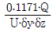
이용 δy: 250m, δz: 140m )- 62㎍/m3
- 77㎍/m3
- 83㎍/m3
- 91㎍/m3
(정답률: 67%)

2. 대기의 특성에 관한 설명 중 틀린 것은?
- 성층권에서는 오존이 자외선을 흡수하여 성층권의 온도를 상승시킨다.
- 지표부근의 표준상태에서의 건조공기의 구성성분은 부피농도로 질소＞산소＞아르곤＞이산화탄소의 순이다.
- 대기의 온도는 위쪽으로 올라갈수록, 대류권에서는 하강, 성층권에서는 상승, 열권에서는 하강한다.
- 대류권의 고도는 겨울철에 낮고, 여름철에 높으며, 보통 저위도 지방이 고위도 지방에 비해 높다.
(정답률: 70%)
3. 지균풍에 관한 설명으로 가장 거리가 먼 것은?
- 대기경계층 상부 즉, 고도 1km 이상의 상공에서 등압선이 직선일 때 등압선과 직각으로 부는 바람이다.
- 고공풍이므로 마찰력의 영향이 거의 없다.
- 지균풍에 영향을 주는 기압경도력과 전향력은 크기가 같고 방향이 반대이다.
- 등압선이 평행인 경우 북반구에서는 관측자가 지구를 향하여 내려다 보는 경우 저기압지역이 풍향의 왼쪽에 위치한다.
(정답률: 36%)
4. 다음 중 불소 화합물의 주요 배출원으로 가장 적합한 것은?
- 인산비료공업
- 도장공업
- 석유정제 처리업
- 활성탄 제조업
(정답률: 34%)
5. 최대혼합고(MMD)에 관한 설명으로 옳지 않은 것은?
- 통상적으로 밤에 가장 낮으며, 낮시간 동안 증가한다.
- 심한 기온역전 하에서는 0이 될 수도 있다.
- 낮시간 동안에는 통상 20-30m의 값을 나타낸다.
- 실제 MMD는 지표위 수 km까지 실제 공기의 온도종단도를 작성함으로써 결정된다.
(정답률: 65%)
6. 대류권의 오존(O3)에 관한 설명으로 옳지 않은 것은?
- 대류권의 오존은 국지적인 광화학스모그로 생성된 옥시던트의 지표물질이다.
- 대류권에서 광화학반응으로 생성된 오존은 대기중에서 소멸되지 않고 축적되어 계속적인 오염을 유발시킨다.
- 오염된 대기 중의 오존은 로스앤젤레스 스모그 사건에서 처음 확인되었다.
- 대류권에서의 오존 자신은 온실가스로도 작용한다.
(정답률: 50%)
7. 잠재적인 대기오염물질로 취급되고 있는 물질인 이산화탄소에 관한 설명으로 틀린 것은?
- 지구온실효과에 대한 추정 기여도는 CO2가 50% 정도로 가장 높다.
- 대기중의 이산화탄소 농도는 북반구의 경우 계절적으로는 보통 겨울에 증가한다.
- 대기중에 배출하는 이산화탄소의 약 5%가 해수에 흡수된다.
- 지구 북반구의 이산화탄소 농도가 상대적으로 높다.
(정답률: 59%)
8. 섬유의 인장강도를 가장 크게 떨어뜨리는 대기오염 피해의 원인이 되는 주요물질로 다음 중 가장 적절한 것은?
- 불화수소
- 오존
- 황산화물
- 질소산화물
(정답률: 34%)
9. 열섬현상에 관한 설명으로 가장 거리가 먼 것은?
- Dust dome effect 라고도 하며, 직경 10km 이상의 도시에서 잘 나타나는 현상이다.
- 도시지역 표면의 열적 성질의 차이 및 지표면에서의 증발잠열의 차이 등으로 발생된다.
- 태양의 복사열에 의해 도시에 축적된 열이 주변지역에 비해 크기 때문에 형성된다.
- 대도시에서 발생하는 기후현상으로 주변지역 보다 비가 적게 오며, 건조해져 코, 기관지 염증의 원인이 된다.
(정답률: 57%)
10. 질소산화물에 관한 설명 중 옳지 않은 것은?
- NO는 주로 교통량이 많은 이른 아침에 하루 중 최고치를 나타낸다.
- 전세계 질소화합물 줄 인의적인 질소화합물 배출량은 자연적 배출량의 10% 정도인 것으로 추정되고 있다.
- N2O는 대류권에서는 온실가스로 알려져 있으며, 성층권에서는 오존을 분해하는 물질로 알려져 있다.
- NO2의 대기중 체류시간은 2-5일이며, N2O는 10-20일 정도로 추정되고 있다.
(정답률: 60%)
11. 굴뚝높이 50m, 배출 연기온도 200℃, 배출 연기속도 30m/sec, 굴뚝직경이 2m인 화력발전소가 있다. 지금 주변 대기온도가 20℃이고, 굴뚝 배출구에서 대기 풍속이 10m/sec이며, 대기압은 1000mb인 조건에서 다음 Holland식을 이용한 연기의 유효굴뚝높이는?
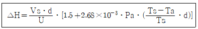
- 약 71m
- 약 85m
- 약 93m
- 약 21m
(정답률: 39%)
12. 고속도로상의 교팅밀도가 시간당 5000대 이고, 차량의 평균속도가 100km/h이다. 차량 한 대의 탄화수소 방출량이 2×10-2g/s일 때, 고속도로상에서 방출되는 탄화수소의 총량(g./sㆍm)?
- 0.1
- 0.01
- 0.001
- 0.0001
(정답률: 62%)
13. 다음의 대기오염물질 중 서울을 비롯한 대도시 지역의 1990년-2000년 동안 오염농도가 다른 오염물질에 비해 크게 감소하지 않은 것은?
- 일산화탄소(CO)
- 납(Pb)
- 아황산가스(SO2)
- 이산화질소(NO2)
(정답률: 59%)
14. 굴뚝에서 배출되는 연기의 확산형태 중 역전현상이 존재하는 형태로만 분류된 것은?
- 부채형(fanning), 지붕형(Lofting), 구속형(Trapping)
- 환상형(Looping), 부채형(Fanning), 훈증형(Fumigation)
- 흔증형(Fumigation), 원추형(Coning), 지붕형(Lofting)
- 원추형(Coning), 환상형(Looping), 부채형(Fanning)
(정답률: 48%)
15. 수용모델(Receptor Model)의 특징이 아닌 항목은?
- 불법배출 오염원을 정량적으로 확인평가할 수 있다.
- 2차 오염원의 확인이 가능하다.
- 지형, 기상학적 정보 없이도 사용 가능하다.
- 현재나 과거에 일어났던 일을 추정하여 미래를 위한 전략은 세울 수 있으나, 미래 예측은 어렵다. 크라운출판사 수질수험서 저자 대기환경 전문강사 최혁재(chj6233@nate.com)
(정답률: 32%)
16. 공기상층으로 갈수록 기온이 급격히 떨어져서 대기상태가 크게 불안정하게 되며, 연기는 상하 좌우 방향으로 크고 불규칙하게 난류를 일으키며 확산되는 연기 형태는?
- Looping형
- Fanning형
- Lofting형
- Fumigation형
(정답률: 60%)
17. 흡연시의 일산화탄소 농도가 250ppm일 때, 혈액속의 카르복시 헤모글로빈(Hb-CO)의 평형농도는? (단, 혈액속의 카르복시 헤모글로빈(Hb-CO)과 옥시 헤모글로빈(Hb-O2)의 평형농도는 아래의 식을 이용하고, Pco 및 Po2는 흡입가스 중 일산화탄소와 산소의 분압을 나타내며, 폐 속에 있는 가스의 산소함유량은 대기의 조성과 같다고 가정)
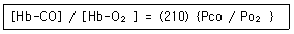
- 25%
- 20%
- 10%
- 5%
(정답률: 37%)
18. Plume내의 오염물의 단면 분포가 전형적인 가우시안 분포(Gaussian Distribution)를 이루고 있는 연기 모양은?
- Fanning
- Lofting
- Coning
- Fumigation
(정답률: 46%)
19. 대기중의 광화학 반응에서 탄화수소를 주로 공격하는 화학종은?
- CO
- O
- NO
- NO2
(정답률: 37%)
20. 주요 오염물질 배출관련 업종과의 연결로 가장 거리가 먼 것은?
- 암모니아 - 시멘트제조공장
- 아황산가스 - 제련소, 펄프제조공장
- 납 - 인쇄, 도가니제조공장
- 염화수소 - 플라스틱공장
(정답률: 54%)
2과목: 연소공학
21. 촉매연소법에 관한 설명 중 틀린 것은?
- 배출가스 중의 가연성 오염물질을 연소로 내에서 파라듐, 코발트 등의 촉매를 사용하여 주로 연소한다.
- 주로 오염물질 양이 많을 때 및 고농도의 VOC, 열용량이 높은 물질을 함유한 가스에 효과적으로 적용된다.
- 일반적으로 구리, 금, 은, 아연, 카드뮴 등은 촉매의 수명을 단축시킨다.
- 대부분의 촉매는 800-900℃ 이하에서 촉매역할이 활발하므로 촉매연소에서의 온도 상승은 50-100℃ 정도로 유지하는 것이 좋다.
(정답률: 32%)
22. 1000K에서 아래 반응식 (a), (b) 각각의 평형상수 Kp1, Kp2는 아래와 같다. 아래 식을 이용하여 다음의 반응(c) CO2(g) ↔ CO(g) + 1/2 O2(g) 의 1000K에서의 평형상수는?
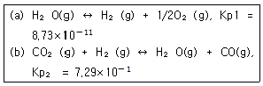
- 6.36×10-11
- 1.20×10-11
- 6.36×10-10
- 1.20×10-10
(정답률: 36%)
23. 기체연료의 종류 중 액화석유가스에 관한 설명으로 가장 거리가 먼 것은?
- LPG라 하며, 가정, 업무용으로 많이 사용되는 석유계 탄화수소가스이다.
- 1기압하에서 -168℃ 정도로 냉각하여 액화시킨 연료이다.
- 탄소수가 3-4개까지 포함되는 탄화수소류가 주성분이다.
- 대부분 석유정제시 부산물로 얻어진다.
(정답률: 50%)
24. 중유를 시간당 1000kg씩 연소시키는 배출시설이 있다. 연돌의 단면적이 3m2일 때 배출가스의 유속(m/s)은?(오류 신고가 접수된 문제입니다. 반드시 정답과 해설을 확인하시기 바랍니다.)
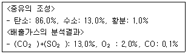
- 약 2.4m/s
- 약 3.2m/s
- 약 3.6m/s
- 약 4.4m/s
(정답률: 19%)
25. 탄소, 수소의 중량 조성이 각각 86%, 14%인 액체연료를 매시 100kg 연소한 경우, 배기가스 분석치가 CO2: 12.5%, O2: 3.5%, N2: 84% 였다면 공기과잉계수는?
- 1.2
- 1.4
- 1.6
- 1.8
(정답률: 48%)
26. 메탄올(CH3OH) 10kg을 완전연소할 때 필요한 이론공기량(Sm3)은?
- 20(Sm3)
- 30(Sm3)
- 40(Sm3)
- 50(Sm3)
(정답률: 44%)
27. 공기를 이용하여 CO를 연소시킬 때 연소가스 중의 CO2의 최대치는?
- 34.7%
- 29.6%
- 23.5%
- 19.5%
(정답률: 42%)
28. 연료의 종류에 따른 연소 특성을 나타낸 것 중 가장 거리가 먼 것은?
- 기체연료는 저발열량의 것으로 고온을 얻을 수 있고, 전열효율을 높일 수 있다.
- 액체연료는 기체연료에 비해 적은 과잉공기로 완전연소가 가능하다.
- 액체연료는 화재, 역화 등의 위험이 크며, 연소온도가 높아 국부가열을 일으키기 쉽다.
- 액체연료의 경우 회분은 적지만, 재 속의 금속산화물이 장해 원인이 될 수 있다.
(정답률: 65%)
29. 아래의 조성을 가진 혼합기체의 하한 연소범위(%)는?
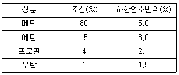
- 2.96
- 4.24
- 4.55
- 5.⑤
(정답률: 53%)
30. 석탄의 탄화도가 증가하면 감소하는 것은?
- 착화온도
- 비열
- 발열량
- 고정탄소
(정답률: 65%)
31. CH4 95%, O2 5%로 조성된 가스 1Sm3를 연소하기 위해 필요한 이론적 공기량(Nm3)은?
- 약 7.5Nm3
- 약 8.8Nm3
- 약 9.4Nm3
- 약 9.6Nm3
(정답률: 25%)
32. 질량퍼센트로 76.9%의 탄소를 함유하는 액체연료를 하루에 450kg 연소시키는 공장이 있다. 완전연소로 가정할 때, 이 공장에서 하루에 방출하는 일산화탄소의 부피(Nm3)는? (단, 0℃, 1atm, 연료 탄소성분 중 5%가 일산화탄소로 된다고 가정)
- 22.8Nm3
- 27.6Nm3
- 32.3Nm3
- 38.6Nm3
(정답률: 39%)
33. 액체연료의 성분이 성분분석결과 탄소 84%, 수소 11%, 황 2.4%, 산소 1.3%, 수분 1.3% 이였다면 이 연료의 저위발열량은? (단, Dulong 식 이용)
- 약 8000 kcal/kg
- 약 10000 kcal/kg
- 약 13000 kcal/kg
- 약 15000 kcal/kg
(정답률: 39%)
34. 어느 보일러에서 시간당 1톤의 중유 연소시 배출가스 중 SO2 배출량이 10Nm3/h 였다면 이 중유의 S함량은 몇 %인가? (단, 중유중의 황성분은 모두 SO2로 배출된다고 가정하고, 중량 % 기준)
- 0.86%
- 1.43%
- 2.41%
- 3.24%
(정답률: 54%)
35. 탄소 87%, 수소 13%의 경유 1kg을 공기비 1.3으로 완전연소시켰을 때, 실제건조연소가스 중 CO2 농도(%)는?
- 10.1%
- 11.7%
- 12.9%
- 13.8%
(정답률: 39%)
36. 내용적 160m3의 밀폐된 상온, 상압 하의 실내에서 부탄 1kg을 완전연소 시 실내의 산소농도(V/V%)는? (단, 기타조건은 무시하며, 공기 중 용적산소비율은 21%)
- 16.6%
- 17.5%
- 18.3%
- 19.4%
(정답률: 38%)
37. 1000초 동안 반응물의 1/2이 분해되었다면 반응물이 1/250 이 남을 때까지는 얼마의 시간이 필요한가? (단, 1차 반응기준)
- 약 6650 초
- 약 6950 초
- 약 7470 초
- 약 7970 초
(정답률: 50%)
38. A + B ↔ C + D 반응에서 A와 B의 반응물질이 각각 1mol/L 이고, C와 D의 생성물질이 각각0.5mol/L 일 때, 평형상수 값을 구하면?
- 0.25
- 0.5
- 0.75
- 1.0
(정답률: 40%)
39. 기체연료의 연소방식 중 확산연소에 관한 설명으로 틀린 것은?
- 기체연료와 연소용 공기를 버너내에서 혼합된다.
- 확산연소에 사용되는 버너로는 포트형과 버너형이 있다.
- 그을음의 발생이 쉽다.
- 역화의 위험이 없으며, 공기를 예열할 수 있다.
(정답률: 34%)
40. 석유계 액체연료의 탄수소비(C/H)에 대한 설명 중 옳지 않은 것은?
- C/H 비가 클수록 이론공연비가 증가한다.
- C/H 비가 클수록 방사율이 크다.
- 중질연료일수록 C/H 비가 크다.
- C/H 비가 크면 비교적 비점이 높은 연료는 매연이 발생되기 쉽다.
(정답률: 59%)
3과목: 대기오염 방지기술
41. 기상 총괄이동단위높이가 1.4m인 충전탑을 이용하여 배출가스 중의 HF를 NaOH 수용액으로 흡수제거하려 할 때, 제거율을 97%로 하기 위한 충전탑의 높이는?
- 2.9m
- 3.2m
- 4.9m
- 5.2m
(정답률: 28%)
42. 흡착과정에 대한 설명으로 틀린 것은?
- 포화점(Saturation point)에서는 주어진 온도와 압력조건에서 흡착제가 가장 많은 양의 흡착질을 흡착하는 점이다.
- 흡착제층 전체가 포화되어 배출가스 중에 오염가스 일부가 남게되는 점을 파과점(Break piont)이라 하고, 이 점 이후부터는 오염가스의 농도가 급격히 증가한다.
- 파과곡선의 형태는 흡착탑의 경우에 따라서 비교적 기울기가 큰 것이 바람직하다.
- 실제의 흡착은 비정상상태에서 진행되므로 흡착의 초기에는 흡착이 천천히 진행되다가 어느 정도 흡착이 진행되면 빠르게 흡착이 이루어진다.
(정답률: 50%)
43. 배출가스 중의 일산화탄소를 제거하는 방법 중 가장 실질적이고, 확실한 방법은?
- 벤츄리스크러버나 충전탑, 등으로 세정하여 제거.
- 백금계 촉매를 사용하여 무해한 이산화탄소로 산화시켜 제거
- 황산나트륨을 이용하여 흡수하는 시보드법을 적용하여 제거
- 분무탑내에서 알카리용액으로 중화하여 흡수제거
(정답률: 54%)
44. 충전탑에 관한 설명으로 가장 거리가 먼 것은?
- 충전제는 화학적으로 불활성이어야 한다.
- 충전제를 규칙적으로 충전하면 불규칙적으로 충전하는 방법에 비하여 압력손실이 적어진다.
- 편류현상은 [ 탑의 직경 / 충전제직경 ]의 비가 8-10범위 일 때 최소가 된다.
- 보통 가스유속의 부하점(Loading Point)에서의 유속의 70-80% 조작이 적당하다.
(정답률: 35%)
45. 벤츄리스크러버의 액가스비를 크게 하는 요인으로 틀린 것은?
- 먼지의 농도가 높을 때
- 먼지입자의 친수성이 높을 때
- 먼지입자의 점착성이 클 때
- 처리가스의 온도가 높을 때
(정답률: 32%)
46. 온도 25℃ 염산액적을 포함한 배출가스 1.5m3/s를 폭 9m, 높이 7m, 길이 10m의 침강집진기로 집진제거하고자 한다. 염산비중이 1.6이라면 이 침강집진기가 집진할 수 있는 최소제거입경(㎛)은? (단, 25℃에서의 공기점도 1.85×10-5 kg/mㆍs)
- 약 12㎛
- 약 19㎛
- 약 32㎛
- 약 42㎛
(정답률: 36%)
47. 원심력 집진장치 중 분리계수(Separation factor, S)에 대한 설명으로 틀린것은?
- 분리계수는 중력가속도에 반비례한다.
- 분리계수는 입자에 작용되는 원심력과 중력과의 관계이다.
- 싸이클론 원추하부의 반경이 클수록 분리계수는 커진다.
- 원심력이 클수록 분리계수가 커지며 집진율도 좋아진다.
(정답률: 37%)
48. 직경이 30cm, 높이가 10m 인 원통형 여과집진장치(여포)를 이용하여 배출가스를 처리하고자 한다. 배출가스량은 750m3/min이고, 여과속도는 3cm/s로 할 경우, 필요한 여포수는?
- 30개
- 35개
- 40개
- 45개
(정답률: 43%)
49. 처리가스량 1×106Sm3/h, 집진장치 입구의 먼지농도 2g/Sm3, 출구의 먼지농도 0.3g/Sm3, 집진장치의 압력손실을 55mmH2O로 했을 경우, Blower의 소요동력은? (단, Blower의 효율은 80%이다.)
- 425kW
- 375kW
- 245kW
- 187kW
(정답률: 24%)
50. 가로 4m, 세로 5m인 두 집진판이 평행하게 설치되어 있고, 두 판 사이 중간에 원형철심 방전극이 위치하고 있는 전기 집진장치에 굴뚝가스가 90m3/min로 통과하고, 입자이동속도가 0.09m/s일 때의 집진효율은? (단, Deutsch - Anderson식 적용)
- 약 84%
- 약 87%
- 약 91%
- 약 96%
(정답률: 42%)
51. 세정집진장치의 장점으로 거리가 먼 것은?
- 한 번 제거된 입자는 처리가스 속으로 재비산 되지 않으며, 전기집진장치보다 협소한 장소에도 설치가 가능하다.
- 점착성 및 조해성 분진의 처리가 가능하다.
- 연소성 및 폭발성 가스의 처리가 가능하다.
- 처리된 가스의 확산이 용이하다.
(정답률: 32%)
52. 헨리의 법칙이 적용되는 가스가 물 속에 2.0kmol/m3 농도로 용해되어 있다. 이 가스의 분압은 29mmHg이다. 이 유해가스의 분압이 18mmHg가 되었다면, 물 속 농도(kmol/m3)는?
- 1.02kmol/m3
- 1.24kmol/m3
- 1.31kmol/m3
- 1.55 kmol/m3
(정답률: 32%)
53. 무촉매환원법에 의한 배출가스 중의 NOx 제거에 관한 설명으로 가장 거리가 먼 것은?
- NO의 암모니아에 의한 환원에는 보통 산소의 공존이 필요하다.
- 1000℃ 정도의 고온과 NH3/NO 가 2 이상의 암모니아의 첨가가 필요하다.
- NOx의 제거율은 비교적 높아 98% 이상이다.
- 반응기 등의 설비가 필요하지 않아 설비비는 작고, 특히 더러운 NOx의 제거에 적합하다.
(정답률: 42%)
54. 염소가스농도가 0.1%인 배기가스 20000Sm3/h를 Ca(OH)2의 현탄액으로 세정처리하여 염소를 제거하려고 할 때 이론적으로 소요되는 Ca(OH)2양은? (단, Ca 원자량: 40)
- 약 31 kg/h
- 약 46 kg/h
- 약 54 kg/h
- 약 66 kg/h
(정답률: 38%)
55. 배출가스 중 먼지농도가 2200mg/Sm3인 먼지를 처리하고자 제진효율이 50%인 중력집진장치, 75%인 원심력집진장치, 80%인 세정집진장치를 직렬로 연결하여 사용해 왔다. 여기에 효율이 80%인 여과집진장치를 하나 더 직렬로 연결할 때, 전체집진효율(①)과 이 때 출구의 먼지농도(②)는 각각 얼마인가? (문제 복원 오류로 보기 내용이 정확하지 않습니다. 정확한 보기 내용을 아시는 분께서는 오류신고 또는 게시판에 작성 부탁드립니다.)
- ① 99.8%, ② 4.4mg/Sm3
- ① 99.8%, ② 4.4mg/Sm3
- ① 99.8%, ② 4.4mg/Sm3
- ① 99.8%, ② 4.4mg/Sm3
(정답률: 36%)
56. 다음 중 접선유입식 원심력집진장치의 특징을 옳게 설명한 것은?
- 입구모양에 따라 나선형과 와류형으로 분류된다.
- 장치 입구의 가스속도는 18-20 cm/s 이다.
- 장치의 압력손실은 5000mmH2O 이다.
- 도익선회식이라고도 하며, 반전형과 직진형이 있다.
(정답률: 39%)
57. 가스 흡수탑에 사용되는 흡수액이 갖추어야 할 요건으로 옳은 것은?
- 흡수액의 점성은 비교적 높아야 한다.
- 화학적으로 활성이 크며, 인화성이 없고 응고점이 높아야 한다.
- 휘발성이 높아야 한다.
- 용해도가 높아야 한다.
(정답률: 39%)
58. 불화수소 농도가 250ppm인 굴뚝 배출가스량 1000Sm3/h를 10m3의 물로 10시간 순환 세정할 경우, 순환수의 pH는? (단, 불화수소는 60%가 전리하고, 불소의 원자량은 19)
- 2.18
- 2.48
- 2.72
- 2.94
(정답률: 37%)
59. 다음 중 직물여과기(Fabric Filter)의 여과직물을 청소하는 방법과 거리가 먼 것은?
- 진동형
- 임펙트 제트형
- 역기류형
- 펄스 제트형
(정답률: 42%)
60. 충전탑에서 SO2를 함유한 유해배출가스를 처리하고 있다. 높이 5m인 충전탑에서 흡수 처리한 후 SO2 농도가 0.1ppm 이었다면 유해가스 중의 SO2 초기농도는 몇 ppm 인가? (단, 기상 총괄이동단위높이 Hog는 0.8m이다.)
- 약 41ppm
- 약 52ppm
- 약 63ppm
- 약 74ppm
(정답률: 43%)
4과목: 대기오염 공정시험기준(방법)
61. 굴뚝 등에서 배출되는 오염물질별 분석방법으로 틀린 것은?
- 메틸렌블루우법에 의한 황화수소 분석시 분석용 시료용액과 황화수소 표준액을 메스플라스크에 취하고 p-아미노디메틸아닐린 용액을 가한 후 뚜껑을 하여 흔들고 조용히 뒤집어서 혼합한다.
- 황산화물을 중화적정법으로 분석 시 이산화탄소가 방해성분이다.
- 이황화탄소를 자외선 가시선 분광법(흡광광도법)으로 분석시 황화수소를 제거하기 위해 흡수병 중 한 개는 전처리용으로 초산카드뮴용액을 넣는다.
- 염화수소를 티오시안산제이수은법으로 분석시 시료에 메틸알콜 10mL을 가하고 마개를 한 후 흔들어 잘 섞는다.
(정답률: 44%)
62. 굴뚝 배출가스 중의 질소산화물 농도를 연속자동측정기기가 아닌 휴대용 측정기기를 사용하여 현장에서 측정한 결과치의 산출기준으로 옳은 것은?
- 5분간격으로 3회이상 측정한 결과의 평균값
- 5분간격으로 3회이상 측정한 결과의 최대값
- 10분간격으로 3회이상 측정한 결과의 평균값
- 10분간격으로 3회이상 측정한 결과의 최대값
(정답률: 58%)
63. 비분산 적외선 분석계의 다음 구성(순서)의 ( )안에 들어갈 명칭을 옳게 나열한 것은?
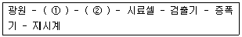
- ① 광학섹터, ② 회전필터
- ① 회전섹터, ② 광학섹터
- ① 광학필터, ② 회전필터
- ① 회전섹터, ② 광학필터
(정답률: 43%)
64. 굴뚝에서 배출되는 먼지시료 측정을 위해 반자동식 채취기를 사용할 때 채취장치 구성 중 흡인노즐에 관한 설명으로 틀린 것은?
- 스테인레스강, 경질유리 또는 석영 유리제로 만들어 진 것을 사용한다.
- 흡인노즐의 안과 밖의 가스흐름이 흐트러지지 않도록 흡인노즐의 내경은 2mm 이상으로 한다.
- 흡인노즐의 꼭지점은 30°이하의 예각이 되도록 한다.
- 흡인노즐에서 먼지포집부까지의 흡인관은 내부면이 매끄럽고 급격한 단면의 변화와 굴곡이 없어야 한다.
(정답률: 60%)
65. 굴뚝 배출가스 중 브롬화합물 적정법(차아염소산염법)으로 분석하고자 할 때, 측정범위 기준(V/V ppm)으로 옳은 것은? (단, 시료가스 채취량은 20L)
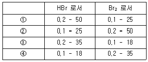
- ①
- ②
- ③
- ④
(정답률: 12%)
66. 멤브레인필터에 포집한 환경대기 중 석면섬유를 위상차현미경을 사용하여 측정하는 석면농도 측정에 있어서 시료채취위치 및 시간기준으로 옳은 것은?
- 원칙적으로 채취지점의 지상 2.0m되는 위치에서 10L/min의 흡인유량으로 2시간 이상 채취한다.
- 원칙적으로 채취지점의 지상 2.0m되는 위치에서 25L/min의 흡인유량으로 4시간 이상 채취한다.
- 원칙적으로 채취지점의 지상 1.5m되는 위치에서 10L/min의 흡인유량으로 4시간 이상 채취한다.
- 원칙적으로 채취지점의 지상 1.5m되는 위치에서 25L/min의 흡인유량으로 2시간 이상 채취한다.
(정답률: 54%)
67. 원자흡수분광광도(원자흡광광도)분석시 스펙트럼의 불꽃중에서 생성되는 목적원소의 원자증기 이외의 물질에 의하여 흡수되는 경우에 일어나는 간섭의 종류는?
- 이온학적 간섭
- 분광학적 간섭
- 물리적 간섭
- 화학적 간섭
(정답률: 37%)
68. 굴뚝 배출가스 중의 수분량 측정을 위해 흡습관에 배출가스를 10L 통과시킨 결과, 흡습관의 중량증가는 0.7510g이었다. 이 때 건식가스미터로 측정하여보니, 게이지압이 4mmH2O이고, 흡인가스 온도가 27℃였다. 측정당시 대기압이 757mmHg이면 배출가스 중의 수분량(%)은?
- 약 6.5%
- 약 9.3%
- 약 10.2%
- 약 13.6%
(정답률: 24%)
69. 다음 중 다이에틸다이티오카바민산은의 클로로폼 용액에 흡수시킨 다음 생성되는 적자색 용액의 흡광도를 측정하는 화합물은?
- 카드뮴 화합물
- 브롬 화합물
- 납 화합물
- 비소 화합물
(정답률: 27%)
70. 굴뚝배출가스 중 먼지를 측정시 등속흡인 정도를 알기 위하여 등속계수(%)를 산정한다. 이 때 몇 % 범위내에 들지않을 경우 다시 시료를 채취하여야 하는가?
- 90-110%
- 95-1⑤%
- 90-1⑤%
- 95-110%
(정답률: 47%)
71. 굴뚝 배출가스 중 먼지 측정위치 기준에 관한 설명으로 옳지 않은 것은?
- 원칙적으로 굴뚝의 굴곡부분을 피하여배출가스 흐름이 안정된 곳을 선정한다.
- 수평굴뚝에서도 측정할수 있으나 측정공의 위치가 수직굴뚝의 측정위치 선정기준에준하여 선정된 곳이어야 한다.
- 수직굴뚝 하부 끝단으로부터 위를 향하여 그 곳의 굴뚝 내경의 8배 이상이 되고, 상부 끝단으로부터 아래를 향하여 그 곳의 굴뚝 내경의 2배 이상이 되는 지점에 측정공 위치를 선정하는 것을 원칙적으로 한다.
- 기준에 적합한 측정공 설치가 곤란할 경우에는 굴뚝상부 내경의 1.5배 이상과 하부 내경의 1/4배 이상되는 지점에 측정공 위치를 선정할 수 있다.
(정답률: 54%)
72. 굴뚝 배출가스 중 휘발성유기화합물질을 테들라 백(Tedlar bag)을 이용하여 채취하고자 할 때 가장 거리가 먼 것은?
- 진공용기는 2-10L의 테들라 백을 담을 수 있어야 한다.
- 테들라 백의각 장치의 모든 연결부위는 유리재질의 관을 사용하여 연결하고, 밀봉그리스 등을 사용하여 누출이 없도록 하여야 한다.
- 소각시설의 배출구같이 테들라 백내로 입자상물질의 유입이 우려되는 경우에는 여과재를 사용하여 입자상물질을 걸러주여야 한다.
- 배출가스의 온도가 100℃미만으로 테들라 백내에 수분응축의 우려가 없는 경우 응축수트랩을 사용하지 않아도 무방하다.
(정답률: 32%)
73. 다음 중 이온크로마토그래피의 구성으로 옳은 것은?
- 광원부 - 시료원자화부 - 단색화부 - 측광부
- 광원부 - 파장선택부 - 시료부 - 측광부
- 용리액조 - 송액펌프 - 시료주입장치 - 분리관 - 써프렛서 - 검출기 - 기록계
- 가스유로계 - 시료도입부 - 가열오븐 - 검출기 - 기록계
(정답률: 34%)
74. 굴뚝 배출가스 중 이황화탄소 분석방법 기준에 관한 설명이다. ( )알맞은 것은?
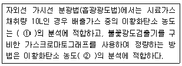
- ① 1-3V/Vppm, ② 0.25V/Vppm 이하
- ① 3-60V/Vppm, ② 0.5V/Vppm 이상
- ① 1-3V/Vppm, ② 0.5V/Vppm 이상
- ① 3-6V/Vppm, ② 0.25V/Vppm 이하
(정답률: 42%)
75. 굴뚝 배출가스 중 무기 불소화합물을 불소 이온으로 분석하는 방법에서 다음 채취가스량 기준표의 ( )안에 알맞은 것은?
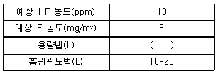
- 10
- 10-20
- 100-200
- 500
(정답률: 29%)
76. 기체-액체 크로마토그래프법에서 일반적으로 사용되는 고정상액체의 종류 중 실리콘계에 해당되는 것은?
- 디메틸슬포란
- 인산트리크레실
- 불화규소
- 폴리페닐에테르
(정답률: 57%)
77. 굴뚝배출가스 중 아황산가스의 연속 자동측정방법으로 거리가 먼 것은?
- 광전도전위법
- 불꽃광도법
- 자외선흡수법
- 용액전도율법
(정답률: 30%)
78. 다음 중 대기오염공정시험방법상 분석시험에 있어 기재 및 용어에 관한 설명으로 맞는 것은?
- 용액의 액성표시는 따로 규정이 없는 한 유리전극법에 의한 pH 미터로 측정한 것을 뜻한다.
- 시험조작중 '즉시'란 10초 이내에 표시된 조작을 하는 것을 뜻한다.
- “감압 또는 진공”이라 함은 따로 규정이 없는 한 10mmHg 이하를 뜻한다.
- “정확히 단다”라 함은 규정한 양의 검체를 취하여 분석용 저울로 0.3mg까지 다는 것을 뜻한다.
(정답률: 62%)
79. 대기오염공정시험방법상 연료의 연소, 금속제련 또는 화학반응 공정 등에서 배출되는 굴뚝 배출가스 중의 일산화탄소 분석방법과 거리가 먼 것은?
- 비분산 적외선 분석법
- 가스크로마토 그래프법
- 정전위 전해법
- 화학발광법
(정답률: 50%)
80. 배출가스 중 금속화합물을 원자흡수분광광도법(원자흡광광도법)으로 분석하기 위해 타르 기타 소량의 유기물을 함유하는 시료의 경우 전처리 방법으로 가장 적합한 것은?
- 질산-과산화수소수 법
- 질산법
- 마이크로파 산분해법
- 저온 회화법
(정답률: 34%)
5과목: 대기환경관계법규
81. 대기환경보전법규상 위임업무의 보고사항 중 보고 횟수가 다른 하나는?
- 자동차 연료 및 첨가제의 제조ㆍ판매 또는 사용에 대한 규제현황
- 굴뚝자동측정기기의 정도검사현황
- 배출시설의 설치허가 및 신고, 대기오염물질 배출상황검사, 배출시설에 대한 업무처리현황
- 수입자동차 배출가스 인증 및 검사현황
(정답률: 39%)
82. 대기환경보전법규상 자동차 연료 제조기준 중 매년 6월 1일부터 8월 31일까지 출고되는 휘발유의 증기압(kPa, 37.8℃)기준으로 옳은 것은? (단, 적용기간은 2008년 12월 31일까지)
- 100이하
- 80이하
- 65이하
- 45이하
(정답률: 34%)
83. 대기환경보전법규상 부식ㆍ마모로 인하여 오염물질이 누출되도록 정당한 사유 없이 배출시설을 방치한 경우의 2차 행정처분 기준은?
- 개선명령
- 경고
- 조업정지 10일
- 조업정지 30일
(정답률: 50%)
84. 대기환경보전법상 사용하는 용어의 정의로 가장 거리가 먼 것은?
- 가스: 물질이 연소ㆍ합성ㆍ분해될 때에 발생하거나 물리적 성질로 인하여 발생하는 기체상 물질
- 기후ㆍ생태계변화 유발물질: 지구온난화 등으로 생태계의 변화를 가져올 수 있는 기체상물질로서 온실가스와 환경부령으로 정하는 것
- 휘발성유기화합물: 석유화학제품, 유기용제, 그 밖의 물질로서 중앙행정기관의 장이 환경부장관과 협의하여 고시하는 것
- 매연: 연소할 때에 생기는 유리 탄소가 주가 되는 미세한 입자상물질
(정답률: 37%)
85. 대기환경보전법규상 석회로시설 및 가열시설의 대기오염물질 배출시설 기준으로 옳은 것은? (단, 펄프, 종이 및 종이제품 제조시설과 인쇄 및 각종 기록매체 제조(복제)시설에 한함)
- 연료사용량이 시간당 25킬로그램 이상
- 연료사용량이 시간당 30킬로그램 이상
- 연료사용량이 시간당 50킬로그램 이상
- 연료사용량이 시간당 100킬로그램 이상
(정답률: 36%)
86. 대기환경보전법상 환경부장관이 특별대책지역의 대기오염방지를 위하여 필요시 그 지역에 새로 설치되는 배출시설에 대해 정할 수 있는 배출허용기준은?
- 일반배출허용기준
- 특별배출허용기준
- 심화배출허용기준
- 강화배출허용기준
(정답률: 40%)
87. 환경정책기본법령상 대기 환경기준 항목과 그 측정방법이 알맞게 짝지어진 것은?
- 아황산가스 - 원자흡광광도법
- 일산화탄소 - 비분산적외선분석법
- 오존 - 자외선광도법
- 미세먼지 - 화학발광법
(정답률: 34%)
88. 대기환경보전법상 사업자가 배출시설 및 방지시설을 운영할 때 다음 중 할수 있는 범위는?
- 배출시설을 가동할 때에 방지시설을 가동하지 아니하거나 오염도를 낮추기 위하여 배출시설에서 나오는 오염물질에 공기를 섞어 배출하는 행위
- 화재사고 예방을 위하여 다른 법령에서 정한 시설로서 배출시설설치허가를 받은 경우로서 방지시설을 거치지 아니하고 오염물질을 배출할 수 있는 가지배출관 등을 설치하는 행위
- 부식이나 마모로 인하여 오염물질이 새나가는 배출시설을 정당한 사유없이 방치하는 행위
- 방지시설에 딸린 기계와 기구류의 고장이나 훼손을 정당한 사유없이 방치하는 행위
(정답률: 46%)
89. 대기환경보전법규상 고체연료 중 석탄사용시설의 설치기준으로 틀린 것은?
- 배출시설의 굴뚝높이는 100m 이상으로 한다.
- 석탄저장은 옥내저장시설(밀폐형 저장시설포함) 또는 지하저장시설에 저장하여야 한다.
- 굴뚝에서 배출되는 아황산가스, 질소산화물, 먼지 등의 농도를 확인할 수 있는 기기를 설치하여야 한다.
- 석탄연소재는 덮개가 있는 차량으로 운반하여야 한다.
(정답률: 19%)
90. 대기환경보전법령상 개선계획서의 제출에 관한 설명으로 틀린 것은?
- 개선명령을 받은 사업자는 명령을 받은 날부터 30일이내에 시ㆍ도지사에게 개선계획서를 제출한다.
- 개선기간이 끝나기 전에 개선하려면 그 개선하려는 기간을 개선계획서에 명시한다.
- 개선기간 중에 배출시설의 가동을 중단하거나 제한하려면 그 기간과 제한의 내용을 개선계획서에 명시한다.
- 공법 등의 개선으로 오염물질의 배출을 감소시키려면 그 내용을 개선계획서에 명시한다.
(정답률: 39%)
91. 대기환경보전법상 기후ㆍ생태계 변화유발물질로만 나열된 것은?
- 이산화탄소, 일산화탄소
- 메탄, 이산화질소
- 과불화탄소, 육불화황
- 수소불화탄소, 아황산가스
(정답률: 64%)
92. 악취방지법규상 고의 또는 중대한 과실로 검사결과를 거짓으로 작성한 경우의 악취검사기관에 대한 2차 행정처분기준은?
- 업무정지 1월
- 업무정지 3월
- 업무정지 6월
- 지정취소
(정답률: 29%)
93. 다중이용시설 등의 실내공기질관리법규상 실내공기질 유지기준으로 틀린것은? (단, 대규모점포 기준)
- PM10 (㎍/m3): 200 이하
- CO2 (ppm): 1000 이하
- HCHO (㎍/m3): 120 이하
- CO (ppm): 10 이하
(정답률: 38%)
94. 대기환경보전법규상 휘발유를 연료로 사용하는 이륜자동차(50cc 이상)의 배출가스 보증기간 적용기준은? (단, 2006년 1월 1일 이후 2008년 12월 31일까지의 제작자동차 기준)
- 1년 또는 5,000km
- 2년 또는 10,000km
- 3년 또는 20,000km
- 4년 또는 160,000km
(정답률: 42%)
95. 환경정책기본법령상 환경기준으로 옳은 것은? (단, ①, ②는 대기환경기준, ③, ④는 수질 및 수생태계 1등급 “해역”의 생활환경 기준)
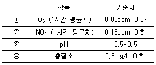
- ①
- ②
- ③
- ④
(정답률: 34%)
96. 대기환경보전법규상 운행차 배출가스 정밀검사대행자 및 지정사업자의 기술능력 및 시설ㆍ장비 기준으로 거리가 먼 것은?
- 건물면적은 검차장 50m2 이상, 사무실(검사원사무실ㆍ수검자대기실 등을 포함)은 20m2 이상이어야 한다.
- 검사진로는 너비 5m 이상, 길이 20m 이상, 높이 4m 이상이어야 한다. 다만 검사진로 길이가 35m 이상인 경우에는 검사장비 2조를 설치할 수 있으며, 이 경우 검사진로는 2개 진로로 본다.
- 자동차의 검사진로 진ㆍ출입을 위하여 검사진로 입구부터 10m 이상의 여유공간을 확보하되 대형자동차의 진입ㆍ진출에 지장이 없어야 한다.
- 검사진로는 정밀검사 전용진로로서 차량의 진입 또는 진출이 순차적으로 진행할 수 있는 구조이어야 하며, 검사진로의 바닥은 차대동력계중심축으로부터 전ㆍ후 8m 이상 수평을 유지하여야 한다.
(정답률: 55%)
97. 대기환경보전법규상 대기오염물질 배출시설(공통시설)기준으로 틀린 것은?
- 100킬로와트 이상인 발전용내연기관(도서지방용ㆍ비상용 및 수송용은 제외)
- 열병합발전시설
- 포장능력이 시간당 100킬로그램 이상인 고체입자상물질 포장시설
- 동력이 10마력 이상인 선별시설(습식 및 이동식 제외)
(정답률: 22%)
98. 대기환경보전법령상 개선명령에 관한 내용으로 틀린 것은?
- 개선명령을 받은 자는 환경부장관이 정한 개선기간 중 천재지변 등 부득이한 사유가 발생된 경우에는 개선기간을 연장 신청을 할 수 있다.
- 환경부장관은 사업자에게 배출허용기준을 초과하는 배출시설 또는 방지시설에 대해 개선명령을 할 수 있다.
- 시ㆍ도지사는 개선명령을 받은 사업자가 제출한 개선계획서상의 개선기간의 범위내에서 개선기간을 정할 수 있다.
- 개선명령을 받지 아니한 사업자가 단전으로 인해 방지시설을 적정하게 운영할 수 없어 배출허용기준초과 오염물질을 배출하게 되는 경우라도 개선계획서를 제출하고 개선할 수 있다.
(정답률: 25%)
99. 대기환경보전법규상 비산먼지 발생억제를 위한 시설을 설치해야 하는 자가 그 시설을 설치하지 않은 경우에 대한 벌칙기준은? (단, 시멘트ㆍ석탄ㆍ토사ㆍ사료ㆍ곡물 및 고철의 분채상물질 운송자는 제외)
- 100만원 이하의 과태료
- 200만원 이하의 과태료
- 300만원 이하의 벌금
- 500만원 이하의 벌금
(정답률: 29%)
100. 대기환경보전법령상 해당사업자는 확정배출량에 관한 자료제출을 부과기간 완료일로부터 최대 며칠이내에 환경부장관에게 제출하여야 하는가?
- 10일
- 15일
- 30일
- 60일
(정답률: 34%)
Cmax = (Q / (π * u * H)) * (1 + (δy / H))^(-1) * (1 + (δz / H))^(-1)
여기서, Q는 배출량, u는 대기풍속, H는 유효굴뚝높이, δy는 수직거리, δz는 수평거리이다.
따라서, 주어진 값들을 대입하면,
Cmax = (115 / (π * 5 * 100)) * (1 + (250 / 100))^(-1) * (1 + (140 / 100))^(-1) = 77㎍/m^3
따라서, 정답은 "77㎍/m^3"이다.